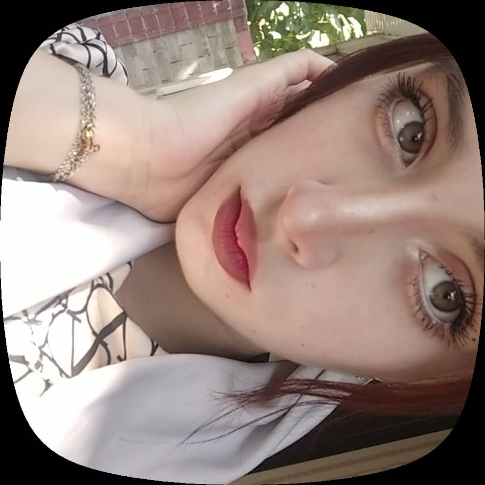
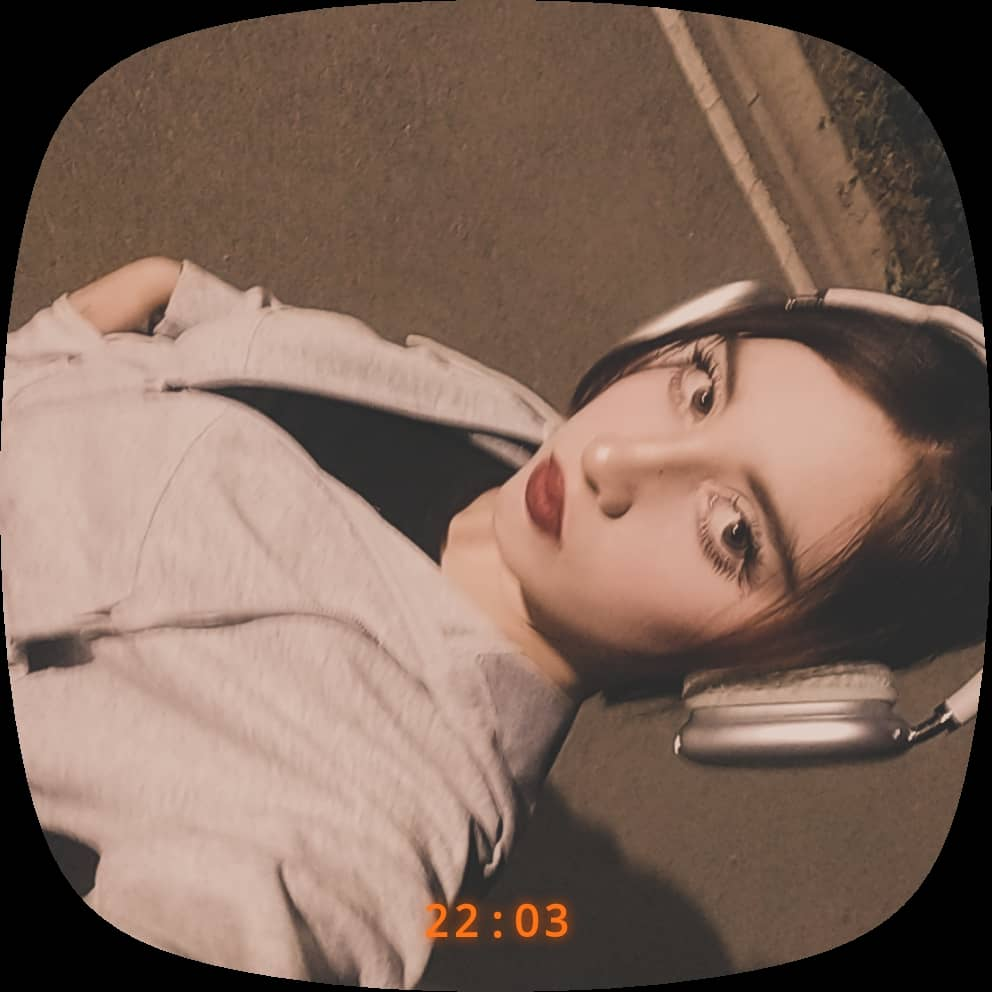
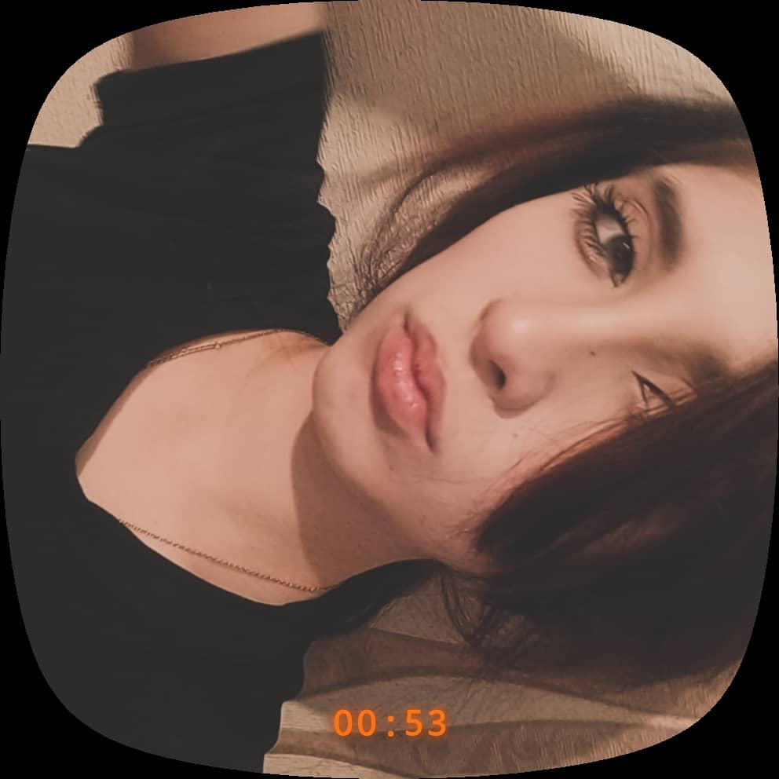
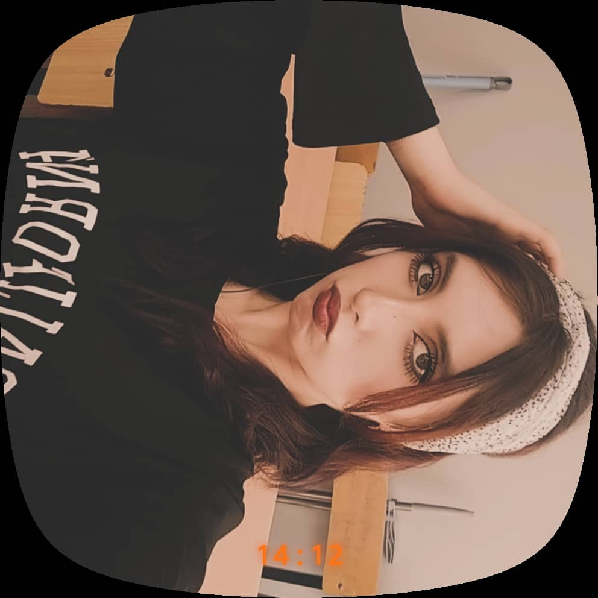

Улыбка обнаружена
Мгновенное повышение уровня счастья.
В этом деле содержится информация об одном очень особенном человеке.
После открытия пути назад не будет.
Твой ответ записан и успешно подтверждён.
Хотя, если честно, другого правильного ответа здесь и не было.
Интеллект: подозрительно высокий.
Улыбка: опасная.
Воздействие на одного конкретного человека: значительное.

Доверие подтверждено.

Похоже, с этим человеком возникла серьёзная проблема.
Это уже становится серьёзной проблемой.
Каждая улыбка вызывает необоснованный всплеск счастья. Каждая фотография мешает нормально сосредоточиться.
Ситуация полностью вышла из-под контроля.
Мгновенное повышение уровня счастья.
Уровень концентрации резко снизился.
Почему-то всё вокруг становится немного лучше.
Разумного объяснения этому пока не найдено.

На самом деле этот сайт никогда не был расследованием.
Это был просто очень сложный способ сказать:
«Ты мне действительно очень нравишься».
Потому что почему-то именно тебе хочется рассказывать разные вещи.
Именно тебя хочется видеть. Именно твоё сообщение может изменить настроение.
И как-то незаметно ты стала для меня важным человеком.
После рассмотрения всех имеющихся доказательств остаётся только один вывод.
Я хочу, чтобы ты была в моей жизни.
Твоя улыбка.
Твои глаза.
То, как ты смеёшься.
То, как рядом с тобой становится спокойно.
И просто то, что ты — это ты.
01 С тобой обычные моменты ощущаются по-другому.
02 Мне нравится разговаривать с тобой, даже когда говорить особо не о чем.
03 Мне нравятся твои маленькие привычки, твои реакции и то, какая ты есть.
04 И почему-то хочется создавать с тобой ещё больше воспоминаний.

Наверное, я не смогу идеально это объяснить.
Но я точно знаю, что мне нравится, когда ты есть в моей жизни.
Мне нравится твоя улыбка. Мне нравится твой голос. Мне нравятся наши разговоры. Мне нравятся наши маленькие моменты.
И я надеюсь, что их будет ещё очень много.
❤️